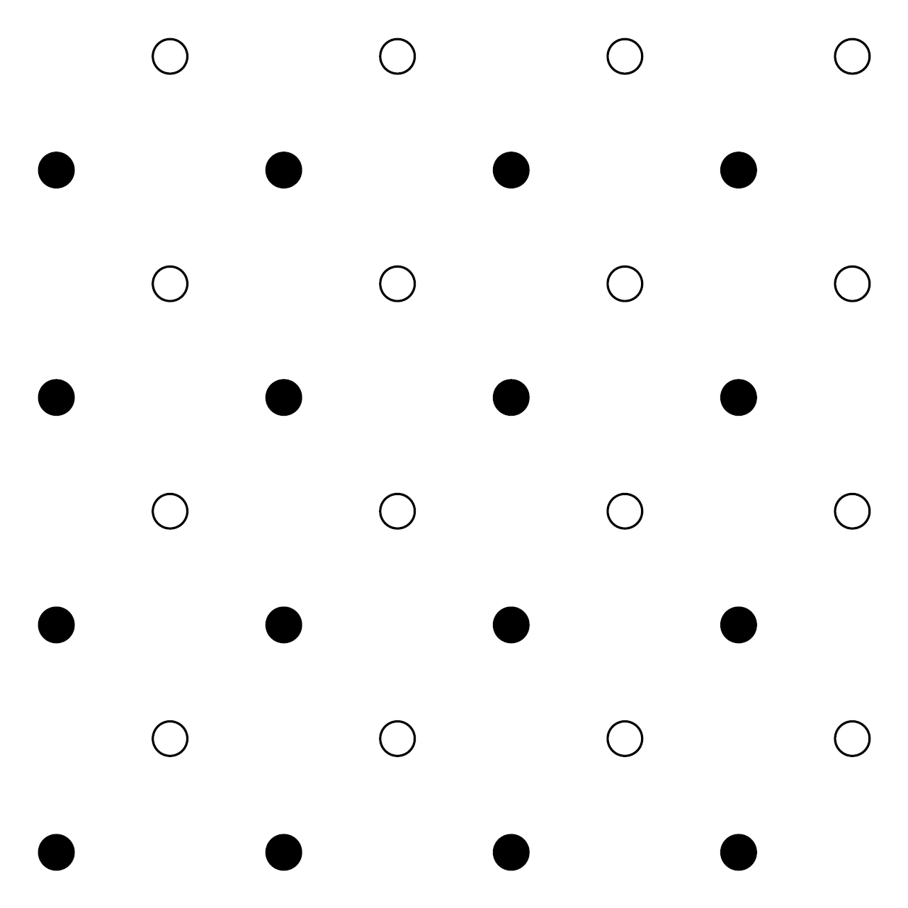
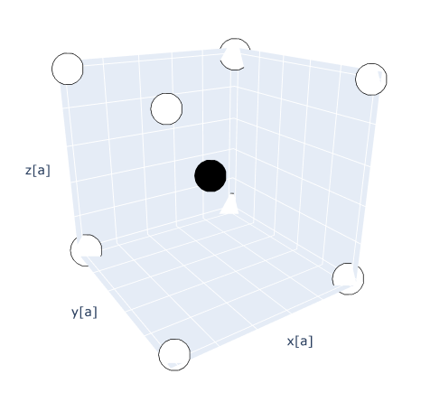

Assignment 4: Crystals¶
The fourth assignment can be found here
Exercise 1 - Two-dimensional crystal structure¶
Consider the following two-dimensional diatomic crystal:

-
Sketch the Wigner-Seitz unit cell and two other possible primitive unit cells of the crystal
An example of two possible primitive primative cells are shown below, along with the Wigner-Seitz cell, which is unique.

-
If the distance between the filled circles is \(a=2.8\mathrm{\unicode{x212B}}\), what is the area of the primitive unit cell? How would this area change if all the empty circles and the filled circles were identical?
The area of the primitive unit cell is \(A = a^2\). If the filled and empty circles are identical particle, the nearest neighbour distance becomes \(a^* = \frac{a}{\sqrt{2}}\) and thus the area \(A^* = {a^*}^2 = \frac{a^2}{2} = \frac{A}{2}\).
-
Write down one set of primitive lattice vectors and the basis for this crystal. What happens to the number of elements in the basis if all empty and filled circles were identical?
One set of primitive lattice vectors is
\[ \mathbf{a_1} = a \hat{\mathbf{x}}, \quad \mathbf{a_2} = a \hat{\mathbf{y}}. \]With respect to the primitive lattice vectors, the basis is
\[ \huge \bullet ~ \normalsize[0,0], \quad \bigcirc ~ [\frac{1}{2},\frac{1}{2}] \]If all atoms were identical, then the basis only has one element (and consequently the PLVs above would cease to be PLVs)
-
Imagine expanding the lattice into the perpendicular direction \(z\). We can define a new three-dimensional crystal by considering a periodic structure in the \(z\) direction, where the filled circles have been displaced by \(\frac{a}{2}\) in both the \(x\) and \(y\) direction from the empty circles. The figure below shows the new arrangement of the atoms.  What lattice do we obtain? Write down the basis of the three-dimensional crystal.
The lattice is a cubic lattice and the basis of the crystal is
\[ \huge \bullet \normalsize ~ [0,0,0], \quad \bigcirc ~ \left[\frac{1}{2},\frac{1}{2},\frac{1}{2}\right]. \]An example of such a material is Caesium Chloride (CsCl).
Exercise 2 - Three-dimensional crystal structure¶
The image below shows the three dimensional structure of zincblende (ZnS) (zinc atoms are yellow, sulphur atoms are grey).

-
How many atoms are in the unit cell?
Corner atoms + face atoms (\(6 \times 1/2\)) + interior atoms (\(4 \times 1\)) = \(1 + 3 + 4 = 8\)
-
Draw the plan view of the unit cell

-
Identify the lattice type of zincblende
The lattice type is Face-centred cubic (FCC)
-
Describe the basis for zincblende
The basis can be described as Zn at [0,0,0] and S at [1/4, 1/4, 1/4]
-
Given the unit cell length \(a=5.41\mathrm{\unicode{x212B}}\), calculate the nearest-neighbour Zn-Zn, Zn-S, and S-S distances
This is just geometry: Zn-Zn is \(a/\sqrt{2} = 3.83\mathrm{\unicode{x212B}}\), Zn-S is \(a\sqrt{1/4^2 + 1/4^2 + 1/4^2} = 2.34 \mathrm{\unicode{x212B}}\), and S-S is \(a/\sqrt{2} = 3.83\mathrm{\unicode{x212B}}\).
Exercise 3 - Filing factor¶
Consider a lattice with a sphere at each lattice point, and choose the radius of the spheres to be such that neighbouring spheres just touch. The filling factor (or packing fraction) is the fraction of the volume of all of space which is enclosed by the union of all the spheres (i.e. the ratio of the volume of the spheres to the total volume).
-
Calculate the packing fraction for a simple cubic lattice
The volume of a conventional unit cell is \(V = a^3\). Each cell corresponds to a single sphere, and the radius of this sphere is \(a/2\) so the volume of the sphere is \(V_s = 4\pi/3 \times (a/2)^3\). Therefore the packing fraction \(V_s/V = \pi/6 \approx 0.52\)
-
Calculate the packing fraction for a BCC lattice
The volume of a conventional unit cell is \(V = a^3\). Each conventional cell contains two lattice points which are a distance \(a\sqrt{3}/2\) apart, thus the radius of each sphere is \(a\sqrt{3}/4\) so the volume of the sphere is \(V_s = 4\pi/3 \times (a\sqrt{3}/4)^3\). Therefore the packing fraction \(2V_s/V = \pi\sqrt{3}/8 \approx 0.68\)
-
Calculate the packing fraction for an FCC lattice
The volume of a conventional unit cell is \(V = a^3\). Each conventional cell contains four lattice points which are a distance \(a\sqrt{2}/2\) apart, thus the radius of each sphere is \(a\sqrt{2}/4\) so the volume of the sphere is \(V_s = 4\pi/3 \times (a\sqrt{2}/4)^3\). Therefore the packing fraction \(4V_s/V = \pi/(3\sqrt{2}) \approx 0.74\)
Exercise 4 - Reciprocal lattice¶
-
Show that the reciprocal lattice of a FCC lattice is a BCC lattice. Correspondingly, show that the reciprocal lattice of a BCC lattice is an FCC lattice
The BCC has primitive lattice vectors
\[ \begin{aligned} &\mathbf{a}_{1}=[1,0,0] ~ a \\ &\mathbf{a}_{2}=[0,1,0] ~ a \\ &\mathbf{a}_{3}=[1 / 2,1 / 2,1 / 2] ~ a \end{aligned} \]from which we can construct primitive lattice vectors for the reciprocal lattice via
\[ \mathbf{b}_{i}=\frac{2 \pi \mathbf{a}_{j} \times \mathbf{a}_{k}}{\mathbf{a}_{1} \cdot \mathbf{a}_{2} \times \mathbf{a}_{3}} \]which gives
\[\begin{equation} \begin{aligned} \mathbf{b}_{1} &= (1 / 2,0,-1 / 2) ~ \frac{4 \pi}{a} \\ \mathbf{b}_{2} &= (0,1 / 2,-1 / 2) ~ \frac{4 \pi}{a} \\ \mathbf{b}_{3} &= (0,0,1) ~ \frac{4 \pi}{a} \end{aligned} \end{equation}\]and they themselves can be transformed into the standard PLVs via
\[ \begin{aligned} \mathbf{b}_{1}^{\prime} &=\mathbf{b}_{1}+\mathbf{b}_{3} & = &(1 / 2,0,1 / 2) ~ \frac{4 \pi}{a} \\ \mathbf{b}_{2}^{\prime} &=\mathbf{b}_{2}+\mathbf{b}_{3} & = &(0,1 / 2,1 / 2) ~ \frac{4 \pi}{a} \\ \mathbf{b}_{3}^{\prime} &=\mathbf{b}_{1}+\mathbf{b}_{2}+\mathbf{b}_{3} & = &(1 / 2,1 / 2,0) ~ \frac{4 \pi}{a} \end{aligned} \]which is fine since we are making integer additions of PLVs.
-
If an FCC lattice has conventional unit cell with lattice constant \(a\), what is the lattice constant for the conventional unit cell of the reciprocal BCC lattice?
From above, we can see that the lattice constant is \(4\pi/a\)
-
Consider now an orthorhombic face-centred lattice with conventional lattice constants \(a_1, a_2, a_3\). What is the reciprocal lattice now?
Everything from above still holds, except one would have basis vectors scaled to \(4\pi/a_i\)